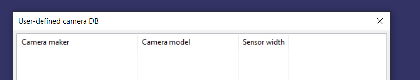

Photogrammetry :
www.photogrammetry.com
Softwares : Regard3D(
https://www.regard3d.org/index.php/download ), MeshLab(
http://www.meshlab.net/#download
), Sketchfab (Free and opensource), psiphon(https://www.psiphon3.com/en/download.html)
Take lots and lots of images to create dataset
Photoshooting practices
Need good camera
Take no flash
no dark shadoes
early morning and late afternoon best
Things to avoid
very dark surfaces
reflective surfaces
transparent surfaces including water
Uniform texture and solid color surfaces
capturing your own shadow
On moving to regard 3d
If camera used is not known to user then we need to add its detail here

Importing photos


Adding picture Set

Compute the matches


Jitna zyada dataset utna left side slider
Now trangulation
 Chooose the old trANGULATION METHOD
Chooose the old trANGULATION METHOD

Now we need to densify the point cloud with highest no of thereads


Export to meshlab
Meshlab me work
Lets open the project

Now coming to cleaning of unwanted part

Select the unwanted part and the

Doing reconstruction